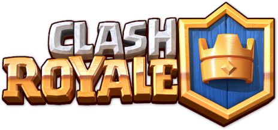

Clash Royale-самая популярная игра по итогам 2016-2017 годов!
Clash Royale-мир карточных боев
Учавствуй в боях 1 на 1 или 2 на 2 и разрабатывай тактику!


Clash Royale-самая популярная игра по итогам 2016-2017 годов!
Учавствуй в боях 1 на 1 или 2 на 2 и разрабатывай тактику!
Cоздана финской студией Supercell. Игру выпустили 2 марта 2016 года. Проект вырос из идеи объединить жанры RTS и коллекционной карточной игры на основе вселенной Clash of Clans, сделав ставку на быстрые дуэли.
Объединение RTS и колекционной карточной игры
Русскоязычная база игроков обращается в Telegram, ВК и на фанатских вики-ресурсах
Игра не теряет актуальности за счет интриги в боях и относительно проста в освоении
Конкретного сюжета в игре нет. Игра строится на динамичных тактических дуэлях.
На момент старта в колоде было всего 48 карт. Сейчас их более ста.

Только за первый год игра принесла компании более $1 млрд.

Выпадение 5 звезд в сундуках варьируется-для легендарных карт шанс 8,89%

Иностранное размещено на платформах Reddit, TikTok, YouTube, Discord и т.д.